Paging is a non-contiguous
Physical memory into Frames.
Logical memory (process) into Pages.
Page size = Frame size.
Page Table
Track free frames
Process with N pages need N free frames
No external fragmentation
Better memory utilization
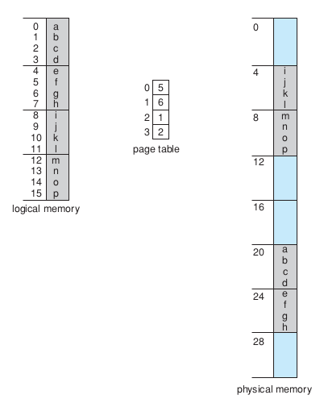
( c ) free space { [ 7 - 14 ] }
A0
A1
A2
A3
0
1
2
3
B0
B1
B2
4
5
6
( e ) free space { [ 4 - 6 ] , [ 11 - 14 ] }
A0
A1
A2
A3
0
1
2
3
C0
C1
C2
C3
7
8
9
10
( f ) free space { [ 11 - 14 ] }
A0
A1
A2
A3
0
1
2
3
C0
C1
C2
C3
7
8
9
10
D0
D1
D2
D3
D4
4
5
6
11
12
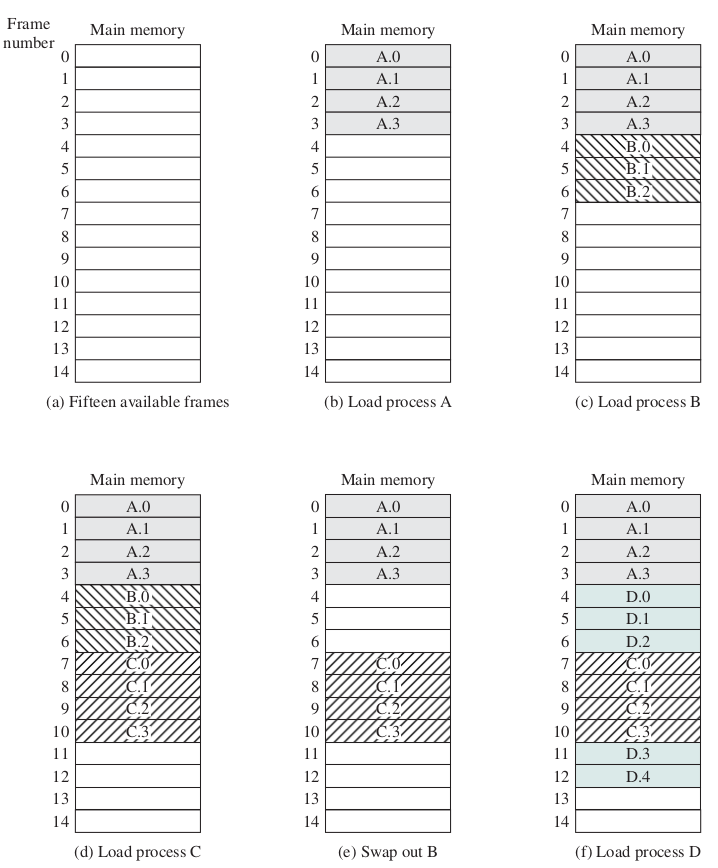
CPU generates Logical Address (virtual address)
Page Number (p): Used as an index into a page table. The page table contains the base address of each page in physical memory.
Page Offset (d): Combined with the base address to define the exact physical memory address.
Page Table maps logical page → physical frame
Final Physical Address = Frame Number + Offset
If the logical address space is and page size is bytes:
Page offset (d) = n bits
Page number (p) = m - n bits
Number of bits of Address related to Maximum supported memory by this computer(cpu and motherboard)
Number of bits of Address = log2(Maximum supported memory)
If max supported memory = 32 words then number of bits needed for address?
32 = 2 ^ 5, , m is number of bytes or words
5 = log2(32)
if p = 2, d = 3 then the size of each frame or page is?
2 ^ 3 = 8
Maximum number of Frames?
Maximum number of precesses
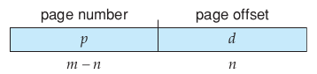
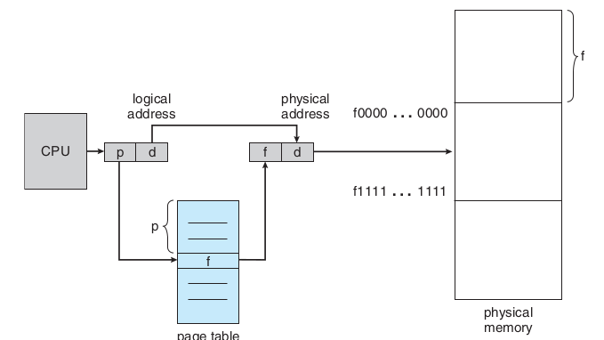
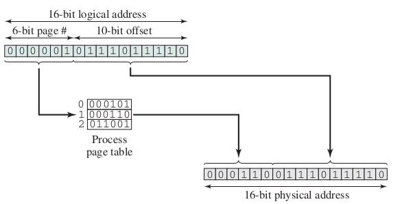
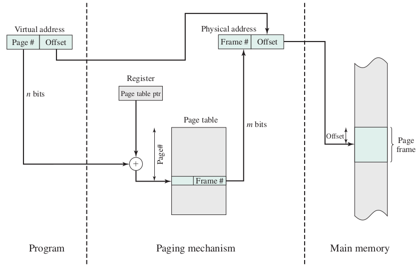
PTBR holds the starting address of the current process's page table.
Changed on every context switch.
Used by MMU to locate the page table in memory.
OS |
OS |
OS |
|
|
|
|
|
|
|
|
|
|
|
|
|
|---|---|---|---|---|---|---|---|---|---|---|---|---|---|---|---|
0 |
1 |
2 |
3 |
4 |
5 |
6 |
7 |
8 |
9 |
10 |
11 |
12 |
13 |
14 |
15 |
0000 |
0001 |
0010 |
0011 |
0100 |
0101 |
0110 |
0111 |
1000 |
1001 |
1010 |
1011 |
1100 |
1101 |
1110 |
1111 |
A |
B |
C |
D |
E |
F |
|---|---|---|---|---|---|
P0_0 |
P0_0 |
P0_0 |
P0_0 |
P0_1 |
P0_1 |
0 |
1 |
2 |
3 |
4 |
5 |
0000 |
0001 |
0010 |
0011 |
0100 |
0101 |
OS |
OS |
OS |
|
E |
F |
|
|
T_P0 |
T_P0 |
T_P0 |
T_P0 |
A |
B |
C |
D |
|---|---|---|---|---|---|---|---|---|---|---|---|---|---|---|---|
OS |
OS |
OS |
|
P0_1 |
P0_1 |
|
|
11 |
01 |
|
|
P0_0 |
P0_0 |
P0_0 |
P0_0 |
0000 |
0001 |
0010 |
0011 |
0100 |
0101 |
0110 |
0111 |
1000 |
1001 |
1010 |
1011 |
1100 |
1101 |
1110 |
1111 |
P0_0 |
P0_1 |
|
|
|---|---|---|---|
11 |
01 |
00 |
00 |
00 |
01 |
10 |
11 |
11 |
01 |
00 |
00 |
|---|---|---|---|
00 |
01 |
10 |
11 |
Logical Address of C = "0010" = "00" "10"
Page Address = "00"
Page Table Cell Index "00" is "11"
Physical Address= concatenation("00", "10")
Physical Address= "00" "10" = "0010"
Logical Address of F = "0101" = "01" "01"
Page Address = "01"
Page Table Cell Index "01" is "01"
Physical Address= concatenation("01", "01")
Physical Address= "01" "01" = "0101"
32 words(bytes) memory
number of bits in address?
number of bits in address=5
Draw Memory Frames, First Frames of OS
Put a process into Memory, Fill page table
Convert a Logical Address to Physical Address
Put another process into Memory
Page size = 4 KB → d uses 12 bits
Page size = 8 KB → d uses 13 bits
Frame 4k then number_bits(d) == 12
Frame 1k then number_bits(d) == 10
Frame 16k then number_bits(d) == 14
Maximux memory supported by cpu
1 MB ==> number_of_bit(Address register) == 20
Frame 4k ==> d == 12 and p == 8
Frame Size and Limitations
Page size is defined by the hardware architecture (always a power of 2).
Typical sizes range from 4 KB to 8 KB (modern systems also support "Huge Pages" up to 1 GB).
The Trade-off: Internal Fragmentation * Process size rarely perfectly aligns with page boundaries. * The last page allocated may not be completely full.
Page size = 4,096 bytes (4 KB). Process size = 72,766 bytes.
Requires: 17 full pages + 3,134 bytes in the 18th page.
Waste: 4,096 - 3,134 = 962 bytes of internal fragmentation.
The Performance Bottleneck:
One access for the page table entry.
One access for the actual data/instruction.
Solution: A special, fast-lookup hardware cache called a Translation Look-aside Buffer (TLB).
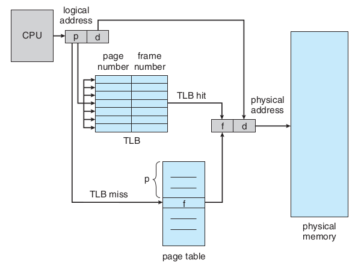
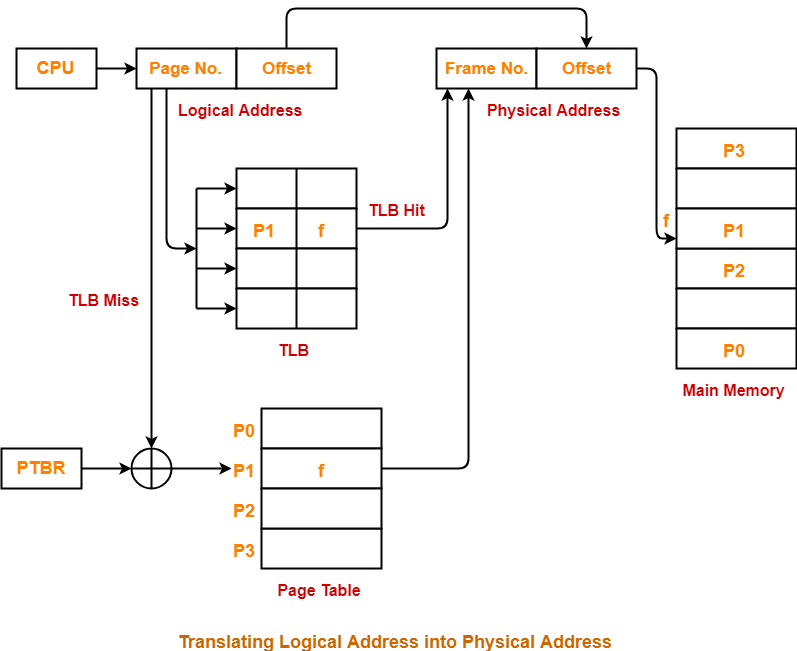
High-speed hardware cache for recent page table entries.
Contains (Page Number → Frame Number) mappings.
Greatly improves performance.
Parallel Search: All keys (page numbers) are compared simultaneously.
TLB Hit: Fast address translation
TLB Miss: Must walk page table in memory
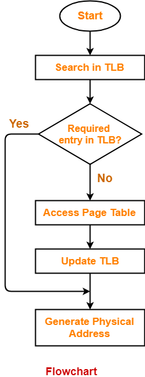
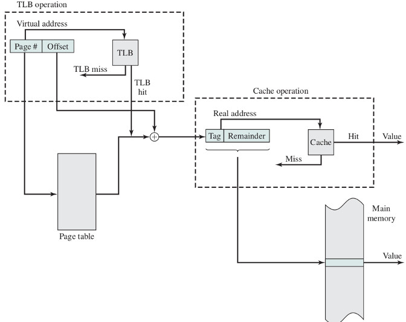
: access Time of TLB)
: access Time of Cache
: access Time of Memory
: Hit ratio of TLB
: Hit ratio of Cache
EAT = table + memory
EAT =
زمان دسترسی مؤثر = زمان دسترسی به جدول صفحه + زمان دسترسی به حافظه
زمان دسترسی مؤثر را برای پردازندهای با حافظهٔ صفحهبندی شده حساب کنید اگر زمان دسترسی به حافظهٔ نهان جدول صفحه برابر ۱ نانو ثانیه باشد و زمان دسترسی به حافظهٔ نهان ۵ نانوثانیه باشد و زمان دسترسی به حافظه برابر ۱۰۰ نانوثانیه باشد و ضریب اصابت حافظهٔ نهان جدول صفحه برابر با ۹۵ درصد و ضریب اصابت به حافظهٔ نهان ۹۰ درصد باشد.
= 1, = 5, = 100, = 0.95, = 0.90
EAT = table + memory
table =
table =
memory =
memory =
EAT = 6 + 15 = 21ns
با فرض برابر بودن نسبتهای اصابت و زمانهای یکسان برای دسترسی به حافظهٔ نهان و حافظهٔ TLB خواهیم داشت
EAT =
EAT =
EAT =
, , :
If we only consider TLB and remove cache
EAT =
EAT =
(The system experiences a 40% slowdown compared to direct memory access due to a 20% miss penalty).
PTLR (Page-Table Length Register): Indicates the size of the page table to prevent out-of-bounds access.
Valid = page is in memory and accessible.
Invalid = page not in memory or access violation → Trap to OS.
Access Rights: Define if a page is Read-only, Read-write, or Execute-only.
Any violation causes a hardware trap to the OS.
Page |
Frame |
Status |
|---|---|---|
0 |
4 |
v |
1 |
7 |
v |
2 |
i |
|
3 |
i |
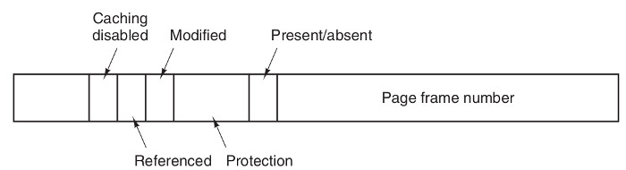
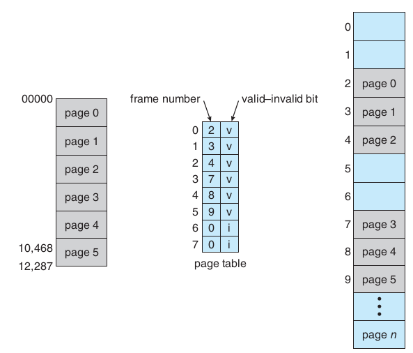
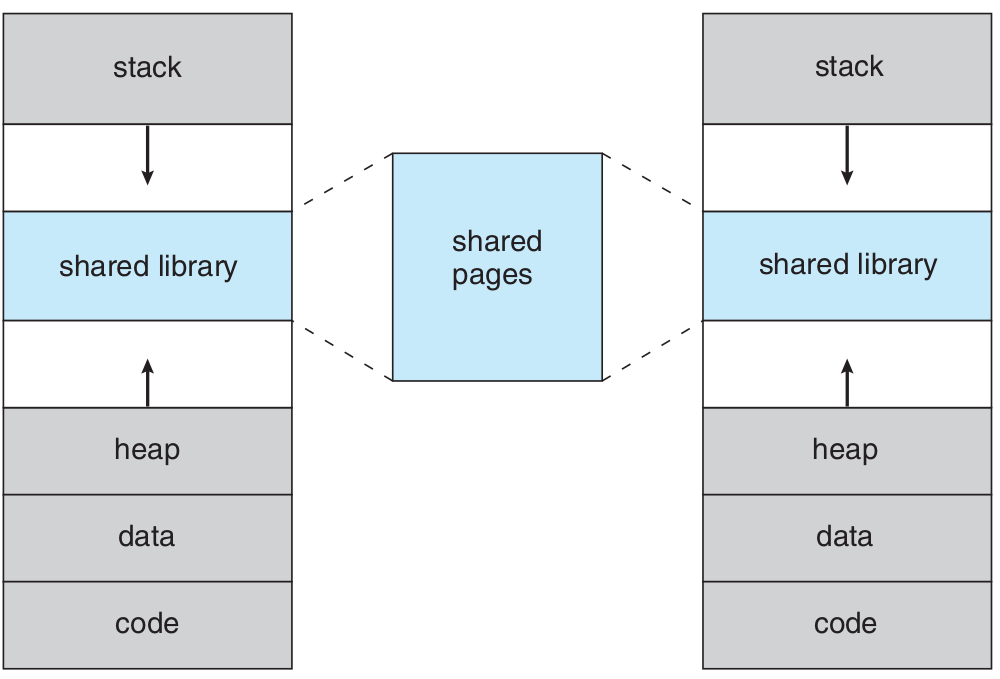
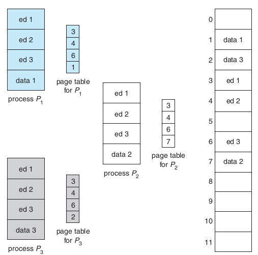
Shared Code:
One copy of read-only (reentrant) code can be shared among multiple processes.
Examples: Text editors, compilers, standard C libraries (libc).
Shared code must appear in the exact same location in the logical address space of all processes utilizing it.
Reduces memory usage.
Private Code and Data:
Each process keeps a separate, private copy of its specific code and data.
The pages for private code and data can appear anywhere in the logical address space.
The Size Problem: Modern operating systems support large logical address spaces (e.g., 32-bit or 64-bit).
Number of entries = (1 Million entries).
If each page table entry is 4 bytes, the page table size is 4 MB.
Every running process needs its own 4 MB page table stored in contiguous physical memory!
This massive overhead necessitates advanced page table architectures (which we will explore next).
Frame size is a power of 2 (typically 4KB, 8KB, ...)
Smaller page size → more pages → larger page table
Larger page size → more internal fragmentation
Trade-off:
Small pages → Low internal fragmentation, High overhead (page table)
Large pages → High internal fragmentation, Smaller page table
Frame 4k ==> d == 12 and p == 8
Frame 1k ==> d == 10 and p == 10 // wrong?
No external fragmentation
Easy to implement memory protection
Supports page sharing
Simple address translation (with TLB)
Internal fragmentation (last page of process)
Page table overhead (especially for large processes)
Two memory accesses per reference (mitigated by TLB)
https://upload.wikimedia.org/wikipedia/commons/c/c2/Write-back_with_write-allocation.svg
https://en.wikipedia.org/wiki/File:Cache,hierarchy-example.svg
Sean K. Barker (https://tildesites.bowdoin.edu/~sbarker/)
http://blog.cs.miami.edu/burt/2012/10/31/virtual-memory-pages-and-page-frames/
https://samypesse.gitbooks.io/how-to-create-an-operating-system/Chapter-8/
https://www.cse.iitb.ac.in/~mythili/teaching/cs347_autumn2016/notes/07-memory.pdf
http://images.bit-tech.net/content_images/2007/11/the_secrets_of_pc_memory_part_1/hei.png
https://www.byclb.com/TR/Tutorials/dsp_advanced/ch1_1_dosyalar/image025.jpg
https://www.cs.princeton.edu/courses/archive/spr11/cos217/lectures/18MemoryMgmt.pdf
https://www.gatevidyalay.com/translation-lookaside-buffer-tlb-paging/
https://www.gatevidyalay.com/translation-lookaside-buffer-tlb-paging/
{kind=link}
{kind=link}
{kind=link}
{kind=link}
{kind=link}
{kind=link}